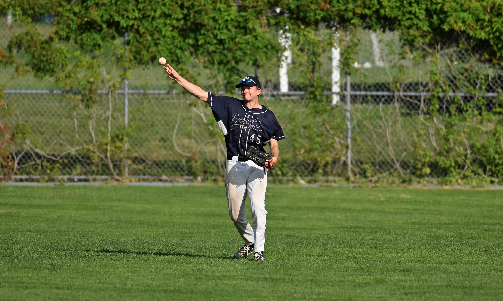

Baseball
Hover over the images below for some of my highlights!
- Comraderie on the bench
- As a defensive substitute, I often spent my time on the bench until the last few innings
- We brought plenty of jokes, banter, and competitiveness

- My only collegiate home run against the University of St. Thomas
- Fun fact, it was the last home run ever hit in the historic St. Thomas vs. Saint John's Rivalry

- Member of the Twin Cities Saints
- 2019 and 2022 State Tournament Participants from the St. Paul League

- Traveling to Kansas, Florida, Arizona and across Minnesota for team events
- Outfield celebrations after winning a game